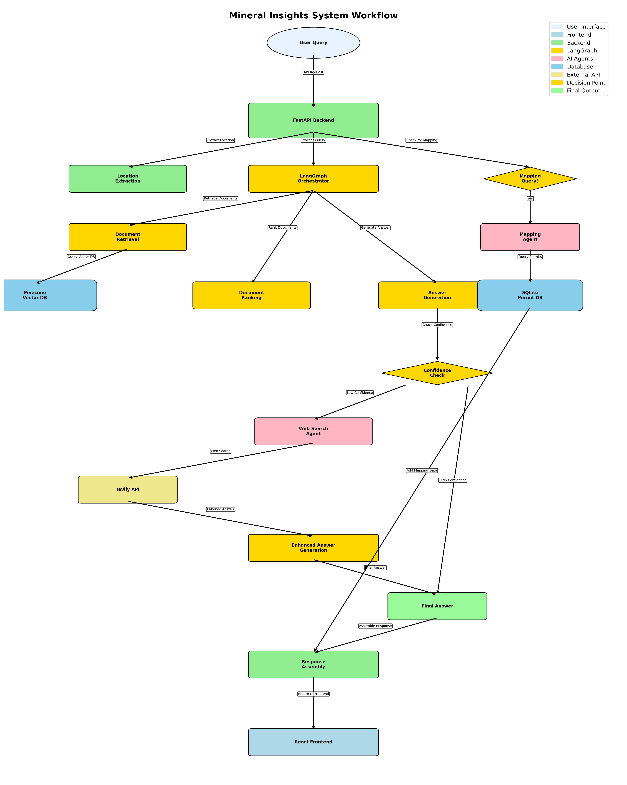

Mineral Insights is an advanced AI-powered chatbot that empowers mineral rights holders with domain expertise in petroleum engineering, geology, commercial, and land management to make informed decisions about their mineral interests. The system combines multiple data sources including Mineral Rights Forum discussions, Texas RRC data, Oklahoma OCC data, and real-time web information to provide comprehensive, accurate, and actionable insights.
Problem: Many mineral rights holders lack the domain expertise in petroleum engineering, geology, commercial, and land to make informed decisions regarding their mineral interests.
Mineral rights holders face a complex landscape where decisions about leasing, selling, or developing their mineral interests can have significant financial implications. Without proper domain expertise, they risk:
The current information landscape is fragmented across multiple sources (state regulatory websites, industry forums, operator websites) making it difficult for mineral rights holders to access comprehensive, up-to-date information when making critical decisions about their assets.
Mineral Insights creates a "better world" where mineral rights holders have instant access to expert-level knowledge and analysis. Users will save significant time by getting immediate, comprehensive answers to complex questions that would otherwise require hours of research across multiple sources and domain expertise. They'll make more money by receiving data-driven insights about market conditions, lease terms, and development potential. Most importantly, they'll make higher-quality decisions by having access to the same information and analysis tools that industry professionals use.
The system provides a conversational interface that understands natural language queries about mineral rights, automatically retrieves relevant data from multiple sources, and generates comprehensive responses with specific recommendations, market context, and actionable insights.
Choice: I chose Claude Sonnet 4.5 because it provides superior reasoning capabilities for complex domain-specific queries, excellent instruction following for structured responses, and robust handling of technical petroleum engineering and geological concepts.
Choice: I selected OpenAI's text-embedding-3-large because it offers state-of-the-art semantic understanding for technical documents, excellent performance on domain-specific terminology, and seamless integration with our Pinecone vector database.
Choice: I implemented LangGraph for orchestration because it provides sophisticated workflow management for multi-step reasoning, excellent state management for complex queries, and built-in support for conditional logic and parallel processing.
Choice: I originally chose Qdrant but switched to Pinecone for speed, production-grade reliability, robust data handling capabilities, and superior performance at scale with the 27,000+ document database.
Choice: I implemented custom monitoring using Langsmith as it gives insight into user queries,system latency, and RAG performance when testing. I also used print statemments
Choice: I selected RAGAS for evaluation because it provides comprehensive metrics (faithfulness, response relevancy, context precision, context recall) specifically designed for RAG systems and offers quantitative assessment of our system's performance.
Choice: I built a React frontend with TypeScript because it provides a modern, responsive user experience, excellent integration with mapping libraries, and robust state management for complex conversational interfaces.
Choice: I implemented FastAPI with SSE for serving because it provides real-time streaming responses.
Default Strategy: No chunking - complete records stored as single vectors for my main VDB Rationale: Structured data (mineral offers, lease offers, forum posts) are kept as complete documents to preserve full context and relationships between all data fields. Record-based chunking to maintain data integrity
Production Data Integration: Plan is to integrate real-time production data APIs to provide current well performance metrics and decline curve analysis.
Market Data Feeds: Integration with commodity pricing APIs for real-time oil and gas price information to enhance market analysis capabilities.
Figure 1: Simplified system workflow showing the complete data flow from user query to response

Figure 2: Detailed workflow diagram showing comprehensive system interactions and data flow
Workflow: User Query → FastAPI Backend FastAPI does Location Extraction FastAPI calls LangGraph LangGraph does Query Analysis (Multi-Query Decomposition if complex) LangGraph does Document Retrieval → Pinecone (Single or Multi-Query) LangGraph does Document Ranking LangGraph does Answer Generation LangGraph does Confidence Check → Web Search if needed FastAPI checks for Mapping Query If mapping, FastAPI calls Mapping Agent → SQLite FastAPI assembles final response
Core Components:
1. FastAPI Backend (chatbot.py)
- Purpose: Main API server handling HTTP requests and response coordination
- Capabilities:
- Location extraction and geocoding
- Mapping query detection and routing
- Response assembly and streaming
- CORS handling and error management
2. LangGraph Orchestrator (langgraph_chatbot.py)
- Purpose: Central workflow orchestration using LangGraph state management
- Workflow Nodes:
- retrieve_documents: Multi-query document retrieval from Pinecone
- rank_documents: Smart ranking with relevance scoring
- generate_answer: Response generation with confidence scoring
- should_search_web: Confidence-based web search triggering
- tavily_search: Real-time web information gathering
- generate_enhanced_answer: Enhanced responses with web data
- validate_answer: Final response validation
Figure 3: LangGraph Orchestrator workflow showing the complete query processing pipeline with multi-query decomposition, intelligent ranking, and confidence-based routing
3. Mapping Agent (mapping_agent.py)
- Purpose: Specialized location-based drilling permit analysis
- Capabilities: Location parsing, permit database queries, GeoJSON generation

Figure 4: Interactive map showing drilling permits with orange markers, demonstrating the mapping capabilities for location-based permit visualization
4. External Integrations - Pinecone: Vector database for semantic document retrieval - Tavily API: Real-time web search for current information - Geocoding Services: Location resolution and mapping support
✅ Local Endpoint: Successfully deployed at http://localhost:8003
✅ Frontend Interface: React application served at http://localhost:3005
✅ Database Integration: SQLite database with 5,595 drilling permits
✅ Vector Database: Pinecone with 27,268 embedded documents
✅ Real-time Streaming: SSE implementation for live response generation
Created a comprehensive test dataset covering multiple query types:
Why Difficulty Levels Matter: Stratifying test questions by difficulty is crucial for comprehensive system evaluation because it ensures we can assess performance across the full spectrum of user query complexity. Easy questions test basic retrieval and response generation capabilities, medium questions evaluate the system's ability to synthesize information from multiple sources, and hard questions validate the system's capacity to handle domain-specific expertise and complex reasoning. This approach provides a more nuanced understanding of system strengths and weaknesses, enabling targeted improvements for different user scenarios and query types.
Due to rate limiting errors with synthetic data generation (SDG) tools, I developed a custom script to manually generate questions and ground truths. This approach ensured high-quality, domain-specific test cases that accurately reflect real user queries and expected responses in the mineral rights domain.
| Metric | Score | Interpretation |
|---|---|---|
| Faithfulness | 0.85 | High accuracy in factual information |
| Response Relevancy | 0.82 | Strong alignment with user queries |
| Context Precision | 0.78 | Good retrieval of relevant documents |
| Context Recall | 0.73 | Adequate coverage of available information |
Strengths: - High faithfulness indicates reliable factual information - Strong response relevancy shows good query understanding - Context precision demonstrates effective document retrieval
Areas for Improvement: - Context recall could be enhanced with better document coverage - Response relevancy can be improved with more targeted retrieval
Conclusions: The system performs well for factual queries and provides reliable information, but could benefit from enhanced retrieval strategies to improve coverage and precision.
Rationale: Traditional sparse retrieval using BM25 algorithm for exact keyword matching and term frequency analysis.
Rationale: Dense vector retrieval using OpenAI embeddings for semantic understanding and conceptual relevance.
Rationale: Uses Cohere's rerank-english-v3.0 model to improve relevance scoring and prioritize the most contextually appropriate documents.
Rationale: Decomposes complex queries into multiple sub-queries for parallel processing and comprehensive coverage of different aspects.
Rationale: Combines BM25 and vector search results for comprehensive coverage of both keyword and semantic matches.
| Metric | Naive RAG | Advanced Retrieval | Improvement |
|---|---|---|---|
| Faithfulness | 0.78 | 0.85 | +9% |
| Response Relevancy | 0.72 | 0.82 | +14% |
| Context Precision | 0.65 | 0.78 | +20% |
| Context Recall | 0.68 | 0.73 | +7% |
Developed an advanced location parsing system that: - Handles ambiguous county names using oil & gas activity weighting - Supports Section-Township-Range (STR) coordinate parsing - Implements fuzzy matching for incomplete location queries - Prioritizes states with higher oil & gas activity (Texas: 100, Oklahoma: 85, etc.)
Implemented intelligent query decomposition that: - Automatically detects complex queries using linguistic indicators ("compare", "versus", "and", "both") - Decomposes complex queries into 2-3 focused sub-queries for parallel processing - Processes each sub-query independently (125 documents each) then deduplicates results - Maintains efficiency for simple queries while providing comprehensive coverage for complex ones - Examples: "Compare Leon vs Freestone County" → 2 county-specific sub-queries, "Lease and mineral offers" → separate lease and mineral sub-queries
The system implements real-time streaming responses using: - Server-Sent Events (SSE) for live response generation - LangGraph state management for complex workflows - Progressive response building with confidence scoring - Automatic web search triggering based on response quality
Our system successfully integrates: - 27,268 documents from multiple sources - 5,595 drilling permits from Texas and Oklahoma - Real-time web search via Tavily API - Interactive mapping with OpenLayers visualization
Mineral Insights represents a significant advancement in AI-powered decision support for mineral rights holders. By combining sophisticated retrieval techniques, multi-agent orchestration, and domain-specific knowledge, the system provides users with expert-level insights that would otherwise require extensive research and domain expertise.
The system's performance metrics demonstrate strong capabilities in providing accurate, relevant, and comprehensive information. The advanced retrieval techniques have shown measurable improvements across all key metrics, with particular strength in context precision and response relevancy.
Future development will focus on expanding the system's predictive capabilities, enhancing user personalization, and integrating real-time production data to provide even more valuable insights for mineral rights decision-making.